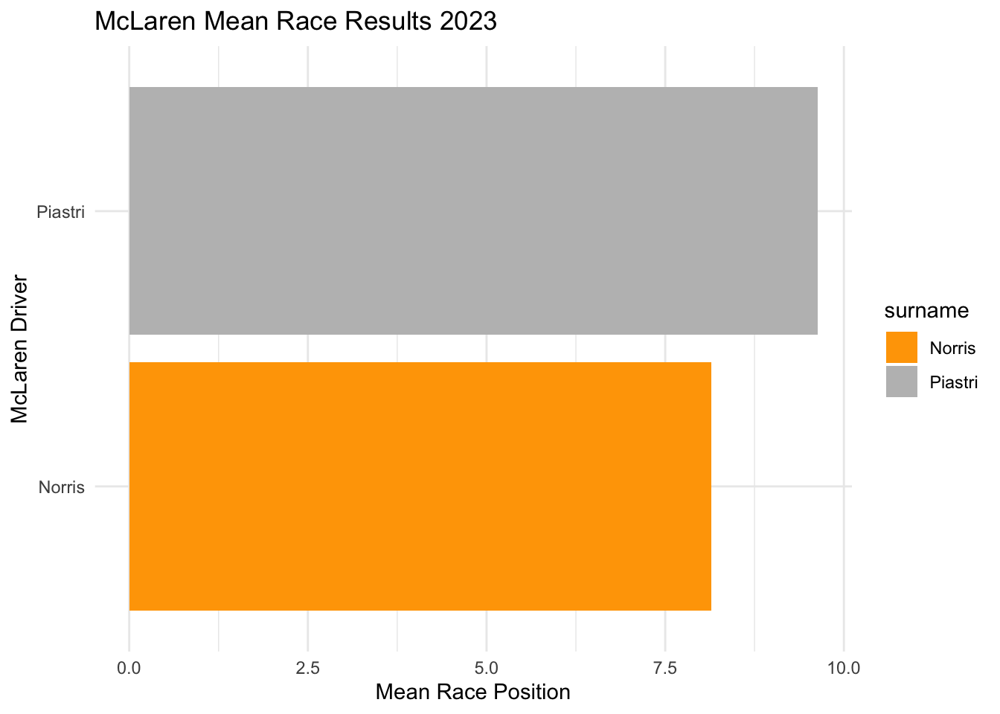

McLarenStandings_2023 <- race_stats |>
select(circuit, year, constructor, surname) |>
# remove duplicates
unique() |>
filter(constructor == "McLaren" & year == 2023) |>
mutate(
final_position = case_when(
#PIASTRI
circuit == "Bahrain International Circuit" & surname == "Piastri" ~ "DNF",
circuit == "Jeddah Corniche Circuit" & surname == "Piastri" ~ "15",
circuit == "Albert Park Grand Prix Circuit" & surname == "Piastri" ~ "8",
circuit == "Baku City Circuit" & surname == "Piastri" ~ "11",
circuit == "Miami International Autodrome" & surname == "Piastri" ~ "19",
circuit == "Circuit de Monaco" & surname == "Piastri" ~ "10",
circuit == "Circuit de Barcelona-Catalunya" & surname == "Piastri" ~ "13",
circuit == "Circuit Gilles Villeneuve" & surname == "Piastri" ~ "11",
circuit == "Red Bull Ring" & surname == "Piastri" ~ "16",
circuit == "Silverstone Circuit" & surname == "Piastri" ~ "4",
circuit == "Hungaroring" & surname == "Piastri" ~ "5",
circuit == "Circuit de Spa-Francorchamps" & surname == "Piastri" ~ "DNF",
circuit == "Circuit Park Zandvoort" & surname == "Piastri" ~ "9",
circuit == "Autodromo Nazionale di Monza" & surname == "Piastri" ~ "12",
circuit == "Marina Bay Street Circuit" & surname == "Piastri" ~ "7",
circuit == "Suzuka Circuit" & surname == "Piastri" ~ "3",
circuit == "Losail International Circuit" & surname == "Piastri" ~ "2",
circuit == "Circuit of the Americas" & surname == "Piastri" ~ "DNF",
circuit == "Autódromo Hermanos Rodríguez" & surname == "Piastri" ~ "8",
circuit == "Autódromo José Carlos Pace" ~ "14",
circuit == "Las Vegas Strip Street Circuit" & surname == "Piastri" ~ "10",
circuit == "Yas Marina Circuit" & surname == "Piastri" ~ "6",
# NORRIS
circuit == "Bahrain International Circuit" & surname == "Norris" ~ "17",
circuit == "Jeddah Corniche Circuit" & surname == "Norris" ~ "17",
circuit == "Albert Park Grand Prix Circuit" & surname == "Norris" ~ "6",
circuit == "Baku City Circuit" & surname == "Norris" ~ "9",
circuit == "Miami International Autodrome" & surname == "Norris" ~ "17",
circuit == "Circuit de Monaco" & surname == "Norris" ~ "9",
circuit == "Circuit de Barcelona-Catalunya" & surname == "Norris" ~ "17",
circuit == "Circuit Gilles Villeneuve" & surname == "Norris" ~ "13",
circuit == "Red Bull Ring" & surname == "Norris" ~ "4",
circuit == "Silverstone Circuit" & surname == "Norris" ~ "2",
circuit == "Hungaroring" & surname == "Norris" ~ "2",
circuit == "Circuit de Spa-Francorchamps" & surname == "Norris" ~ "7",
circuit == "Circuit Park Zandvoort" & surname == "Norris" ~ "9",
circuit == "Autodromo Nazionale di Monza" & surname == "Norris" ~"8",
circuit == "Marina Bay Street Circuit" & surname == "Norris" ~ "2",
circuit == "Suzuka Circuit" & surname == "Norris" ~ "2",
circuit == "Losail International Circuit" & surname == "Norris" ~ "3",
circuit == "Circuit of the Americas" & surname == "Norris" ~ "3",
circuit == "Autódromo Hermanos Rodríguez" & surname == "Norris" ~ "5",
circuit == "Autódromo José Carlos Pace" ~ "2",
circuit == "Las Vegas Strip Street Circuit" & surname == "Norris" ~ "DNF",
circuit == "Yas Marina Circuit" & surname == "Norris" ~ "5"
)
) |> mutate(final_position_numeric = as.numeric(final_position))
# Summarize mean race positions by driver
barplot <- McLarenStandings_2023 |>
group_by(surname) |>
summarize(mean_position = mean(final_position_numeric))
# Create a bar plot of mean race positions
ggplot(barplot, aes(x = mean_position, y = surname, fill = surname)) +
geom_col() +
labs(title = "McLaren Mean Race Results 2023",
x = "Mean Race Position",
y = "McLaren Driver") +
scale_fill_manual(values = c("orange", "grey")) +
theme_minimal()